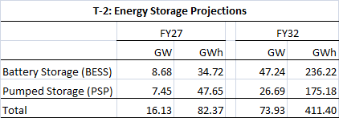
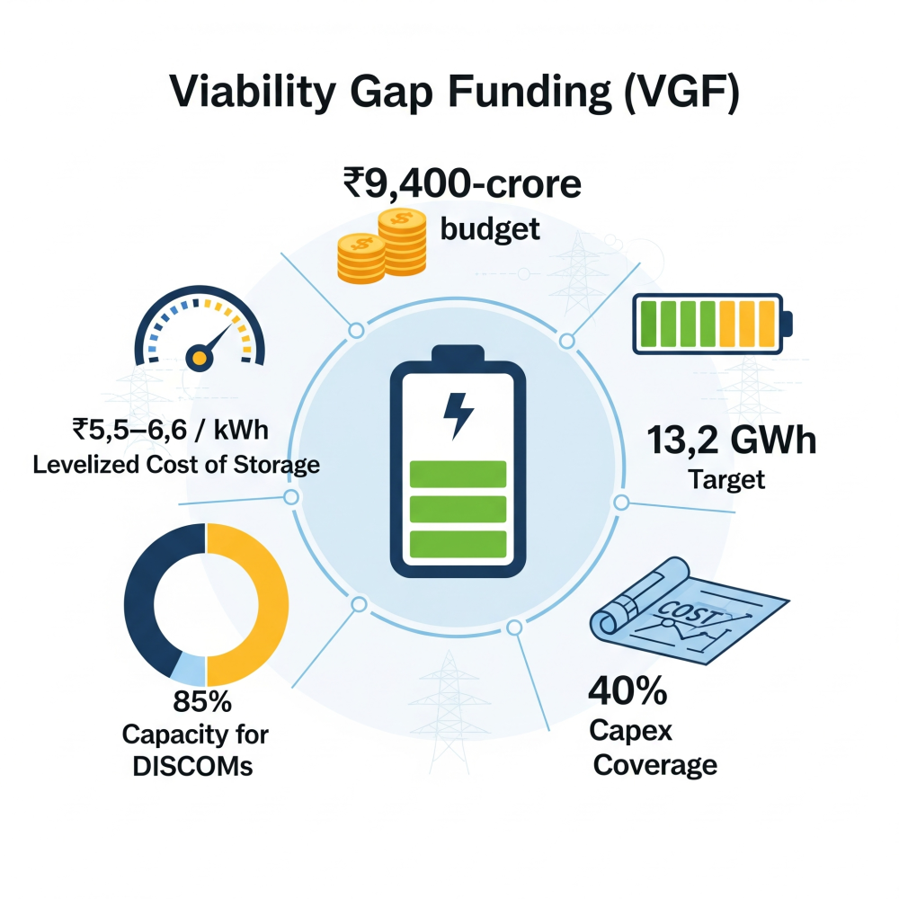
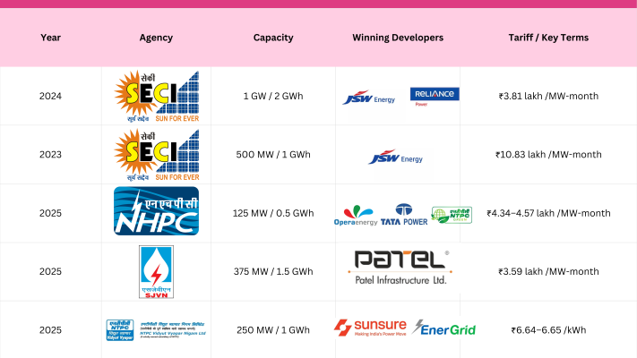
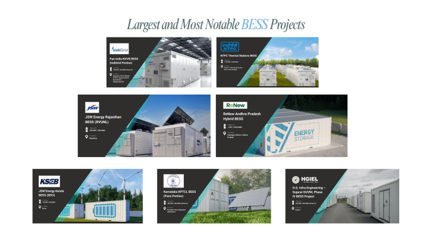
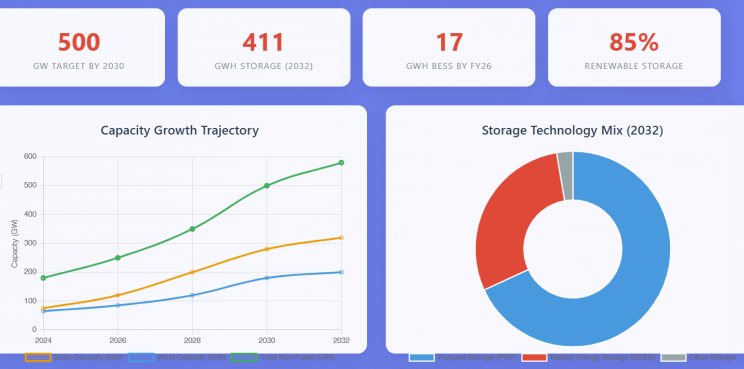
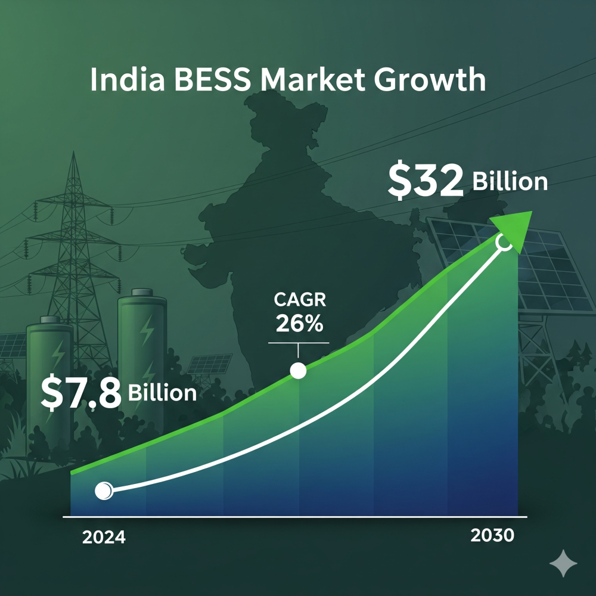

India is knitting together manufacturing incentives, aggressive deployment targets, and a fast-maturing tender pipeline to scale battery energy storage systems (BESS) from today’s sub-GW base to nearly 50 GW by 2032. The three levers—Production-Linked Incentive (PLI) schemes, viability-gap-funded tenders, and clear national planning milestones—are now converging to anchor a domestic BESS industry and underpin the 500 GW non-fossil goal for 2030.
Policy Backbone: PLI Schemes for Advanced Chemistry Cells
The ₹18,100-crore National Programme on ACC Battery Storage incentivises 50 GWh of cell manufacturing, with a 5-year payout after a 2-year gestation window. In two bidding rounds, 40 GWh has been allotted to four firms — Ola Electric (20 GWh), Reliance Industries Limited (15 GWh across two rounds), Hyundai Motor Company (pending confirmation) and Rajesh Exports Limited (Rel) Bangalore (5 GWh). Although none have reached commercial output, the scheme ensures that 10 GWh is ring-fenced for grid-scale stationary storage, directly linking the programme to BESS demand.

Progress has faltered: Ola, Reliance and Rajesh Exports have sought one-year extensions after missing 2024 commissioning milestones, triggering potential penalties and forcing the government to review the scheme’s design. Nevertheless, the PLI framework remains India’s primary vehicle for localising battery value chains and moderating long-term BESS costs.
National Targets & Regulatory Signals
- Capacity outlook: The 2023 National Electricity Plan (NEP) foresees 8.68 GW/34.72 GWh of BESS by 2027, rising to 47.24 GW/236.22 GWh by 2032—a 25-fold scale-up in seven years.

- Energy Storage Obligation (ESO): Distribution utilities must source a growing share of consumption from renewables stored in ESS, ramping from 1% in FY 2024 to 4% by FY 2030.
- Viability Gap Funding (VGF): To accelerate early projects, the Cabinet approved a ₹9,400-crore VGF scheme covering up to 40% of capex for 4 GWh of BESS; falling battery prices have since allowed the target to rise to 13.2 GWh within the same budget. The programme aims for a levelized cost of storage of ₹5.5–6.6 / kWh and reserves 85% of capacity for DISCOMs.

Together, these measures create demand certainty—a prerequisite for the PLI winners to justify giga-factory investments and for developers to bid aggressively in storage tenders.
Tender Pipeline: Rapid Market Learning
Since 2018 India has launched tenders totalling 171 GWh of energy storage, of which 66 GWh is BESS, with more than a third issued in H1 2025 alone. Tariffs have fallen from >₹10 lakh / MW-month in 2022 to sub-₹4 lakh levels in 2025, mirroring global cost declines and rising competition. Key standalone BESS awards are summarised below.

Tariff compression has been accelerated by the VGF scheme, longer contract tenors (up to 12 years) and technology-agnostic guidelines that allow developers to combine multiple chemistries. Several states—Uttar Pradesh, Andhra Pradesh and Rajasthan—are layering state-level VGF over the central scheme, pushing cumulative VGF-backed capacity tendered to ~15.5 GWh by September 2025.
Largest and Most Notable BESS Projects
- NTPC’s Thermal Stations BESS (4,000 MWh) This is currently among the largest grid-scale BESS installations in India and is being deployed at multiple NTPC thermal stations to support balancing and integration of renewables.
- ReNew Andhra Pradesh Hybrid BESS (2,000 MWh) ReNew Power is building one of India’s biggest projects in Andhra Pradesh—a hybrid renewable and storage plant designed to deliver dispatchable green energy.
- JSW Energy BESS Project (2,000 MWh) JSW Energy is quickly scaling up its energy storage initiatives with major projects under way, often as part of hybrid renewables and storage portfolios.
- Tata Power Mundra BESS (50 MW) Tata Power’s Mundra project is a pioneering grid-scale installation focused on supporting solar integration and enhancing grid resilience.
- Modhera Sun Temple Town Solar PV Park BESS (15 MWh) Developed in Gujarat, this project supports a 100% solar-powered town, using BESS for peak load management and round-the-clock clean energy.

Recent Project Awards and Pipeline
- In H1 2025, India awarded 5.4 GW of co-located solar-plus-BESS and 2.2 GW of standalone BESS projects—the highest allocation to date, with JSW Energy, Reliance Power, Adani Green, and ReNew Power among major winners.
- As of July 2025, about 12,500 MW of BESS projects were under tender and another 3,300 MW in the pipeline, aiming to scale up quickly in coming years.
Integration with Renewables & Grid Needs
India’s push for 500 GW of non-fossil capacity by 2030 hinges on smoothing diurnal and seasonal variability. The NEP’s 2032 requirement of 411 GWh of storage (PSP + BESS) dovetails with peak-demand studies indicating 17 GWh of BESS needed by FY 2026 to maintain resource adequacy. ESO compliance further mandates that 85% of stored energy originate from renewables, cementing BESS as a dispatchable complement to solar and wind.

Challenges & Next Steps
- Manufacturing slippage: Delay penalties and potential budget cuts under the ACC-PLI scheme must be balanced with realistic supply-chain timelines.
- Cost trajectory: While tariffs have fallen sharply, reaching the ₹5.5 /kWh VGF target requires sustained battery price declines and localisation of cathode-grade lithium and graphite.
- Project execution: Some early SECI and Gujarat BESS awards faced renegotiation or regulatory pushback due to market price shifts. Streamlined contracting and stable ancillary-service revenues are essential.
- Recycling & safety: With cumulative lithium-ion stock projected at 600 GWh by 2030, India needs enforceable recycling standards and thermal-management norms.
Outlook: If PLI capacities come onstream by 2027 and VGF-supported auctions continue to clear at sub-₹4 lakh /MW-month, India is on course to meet the NEP’s 47 GW BESS target by 2032—turning storage from a policy aspiration into a grid-balancing workhorse.
Market Overview and Growth
India’s BESS market was valued at approximately $7.8 billion (₹65,130 crore) in 2024 and is expected to reach $32 billion (₹2.67 lakh crore) by 2030—a compound annual growth rate of 26%. This rapid growth is being driven by aggressive renewable energy targets (500 GW non-fossil capacity by 2030), strong policy support (including the Production-Linked Incentive scheme and Viability Gap Funding), and substantial tendering for both standalone and co-located BESS projects.

Market Drivers and Policy Support
- Aggressive Renewable Targets: India’s push towards grid decarbonization and RTC green energy supply directly depend on BESS for managing intermittency and grid reliability.
- Policy Initiatives: National policies include production-linked incentives (₹18,100 crore for ACC batteries) and an extension of Inter-State Transmission System charge waivers for storage-linked projects through 2028.
- Economics: Declining battery costs (forecast to fall to $68/kWh by 2030) make BESS deployments more viable.
Challenges
- Execution Risk: Rapid expansion brings execution and financing risks, including challenges in land acquisition, battery raw material supply, and maintaining project economics as tariffs decrease.
- Grid Integration: Upgrading grid infrastructure to accommodate large-scale storage is a significant technical challenge.
Outlook
By 2032, India’s operational BESS capacity is expected to reach 74 GW / 411 GWh, with annual investments in storage expected to exceed ₹4.7 lakh crore by that time. Led by government mandate, supportive policy, and accelerating tender allocation, India’s largest BESS projects will be pivotal to a stable, low-carbon future.